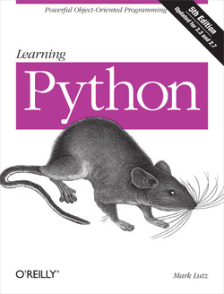

Date: Tue Mar 11 08:25:29 2025
This certifies that:
Celmar Pereira de Andrade
has survived the massive tome:
Learning Python 5th Edition
and is now entiled to all privileges thereof, including the right to proceed on the learning how to develop Web sites, desktop GUIs, scientific models, and assorted apps,[ with the possible assistance of follow-up applications books such as Programming Python (shameless plug intended).
--Mark Lutz, Instructor
(Note: certificate void where obtained by skipping ahead.)
|  | Book support site |